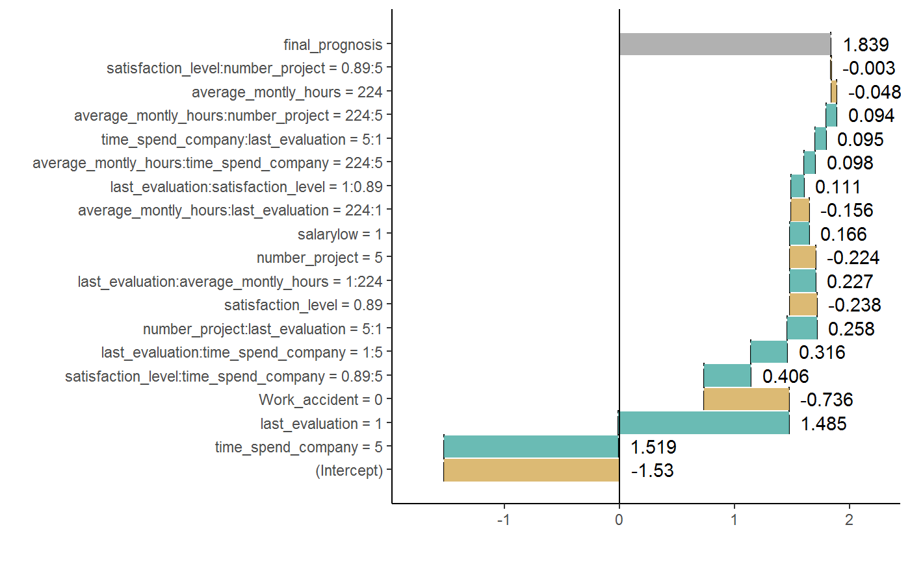

Explain prediction of a single observation
This function calculates a table with influence of variables and interactions on the prediction of a given observation. It supports only xgboost models.
waterfall(xgb_model, new_observation, data, type = "binary", option = "interactions", baseline = 0)
Arguments
| xgb_model | a xgboost model. |
|---|---|
| new_observation | a new observation. |
| data | row from the original dataset with the new observation to explain (not one-hot-encoded).
The param above has to be set to merge categorical features.
If you dont wont to merge categorical features, set this parameter the same as |
| type | the learning task of the model. Available tasks: "binary" for binary classification or "regression" for linear regression. |
| option | if "variables", the plot includes only single variables, if "interactions", then only interactions. Default "interaction". |
| baseline | a number or a character "Intercept" (for model intercept). The baseline for the plot, where the rectangles should start. Default 0. |
Value
an object of the broken class
Details
The function contains code or pieces of code
from breakDown code created by Przemysław Biecek
and xgboostExplainer code created by David Foster.
Examples
library("EIX") library("Matrix") sm <- sparse.model.matrix(left ~ . - 1, data = HR_data) library("xgboost") param <- list(objective = "binary:logistic", max_depth = 2) xgb_model <- xgboost(sm, params = param, label = HR_data[, left] == 1, nrounds = 25, verbose=0) data <- HR_data[9,-7] new_observation <- sm[9,] wf <- waterfall(xgb_model, new_observation, data, option = "interactions") wf#> contribution #> xgboost: intercept -1.492 #> xgboost: time_spend_company = 5 1.360 #> xgboost: last_evaluation = 1 1.093 #> xgboost: Work_accident = 0 -0.423 #> xgboost: satisfaction_level = 0.89 -0.390 #> xgboost: last_evaluation:time_spend_company = 1:5 0.297 #> xgboost: last_evaluation:average_montly_hours = 1:224 0.227 #> xgboost: satisfaction_level:time_spend_company = 0.89:5 0.223 #> xgboost: number_project = 5 -0.211 #> xgboost: average_montly_hours:last_evaluation = 224:1 -0.156 #> xgboost: average_montly_hours = 224 -0.096 #> xgboost: time_spend_company:last_evaluation = 5:1 0.095 #> xgboost: salary = 2 0.074 #> xgboost: satisfaction_level:number_project = 0.89:5 -0.003 #> xgboost: prediction 0.597plot(wf)